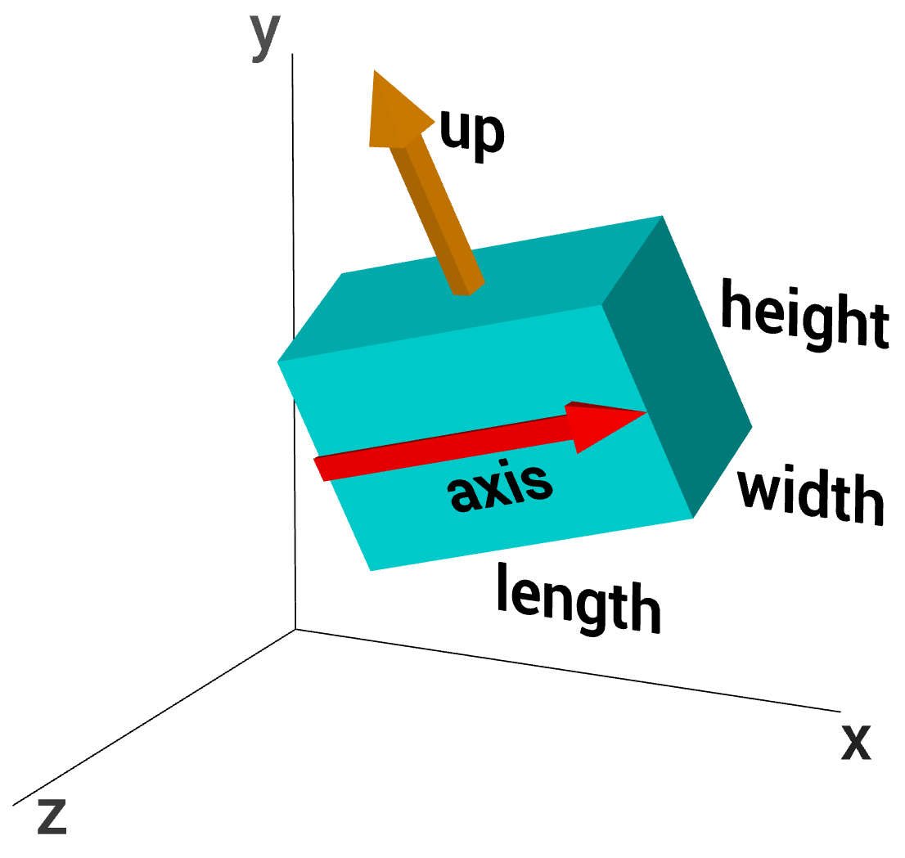

Here is how to create a box object:
mybox = box(pos=vector(x0,y0,z0),
length=L, height=H, width=W)
The given position is in the center of the box, at (x0, y0, z0). This is different from cylinder, whose pos attribute is at one end of the cylinder. Just as with a cylinder, we can refer to the individual vector components of the box as mybox.x, mybox.y, and mybox.z. The length (along the x axis) is L , the height (along the y axis) is H, and the width is W (along the z axis). For this box, we have mybox.axis = vector(L, 0, 0) . Note that the axis of a box is just like the axis of a cylinder.
For a box that isn't aligned with the coordinate axes, additional issues come into play. The orientation of the length of the box is given by the axis (see the diagram):
mybox = box(pos=vector(x0,y0,z0), axis=vector(a,b,c),
size=vector(L,H,W) )
The axis attribute gives a direction for the length of the box, and here the length, height, and width of the box are given in terms of "size" (if the length or size is not specified when creating a box, the length is set to the magnitude of the axis vector).
You can rotate the box around its own axis by changing which way is "up" for the box, by specifying an up attribute for the box that is different from the up vector of the coordinate system:
mybox = box(pos=vector(x0,y0,z0),
axis=vector(a,b,c), length=L,
height=H, width=W, up=vector(q,r,s))
With this statement, the width of the box will lie in a plane perpendicular to the (q,r,s) vector, and the height of the box will be perpendicular to the width and to the (a,b,c) vector.
The box object has the following attributes and default values, like those for cylinders: pos vector(0,0,0), axis vector(1,0,0), up vector(0,1,0), length (1), color (1,1,1) which is color.white, red (1), green (1), blue (1), opacity (1), shininess (0.6), emissive (False), and texture. Additional box attributes and details:
height In the y direction in the simple case, default is 1
width In the z direction in the simple case, default is 1
size (length, height,
width), default is vector(1,1,1)
mybox.size=vector(20,10,12) sets length=20, height=10,
width=12
axis Setting the axis makes the length of the box be equal to the magnitude of the axis vector. An object's axis and up attributes are always perpendicular to each other. Changing the direction of axis also changes the direction of up so that the two directions always remain at right angles to each other. Similarly, changing the direction of up changes the direction of axis so that the two directions always remain at right angles to each other.
canvas By default, an object such as a box will be displayed in the most recently created 3D canvas, which will be the default canvas named "scene" unless you create a canvas yourself (see the related discussion at the start of the canvas documentation).
Order of operations: If when you create an object you specify values for axis and size and up, the operations are executed in that order. That is, first axis is set (which sets the x component of size and may change up if necessary to ensure that axis and up are perpendicular to each other), then size is set (which sets the magnitude of the axis), and then up is set (which may change axis if necessary to ensure that axis and up are perpendicular to each other).
Note that the pos attribute for cylinder, arrow, cone, and pyramid corresponds to one end of the object, whereas for a box, sphere, or ring it corresponds to the center of the object.
If you include make_trail=True when you create the object, a trail will be left behind the object as you move it. For related options, see Leaving a Trail.
See Rotating an Object for an easy way to change the orientation of an object.
See description of Additional Attributes available for all 3D display objects.